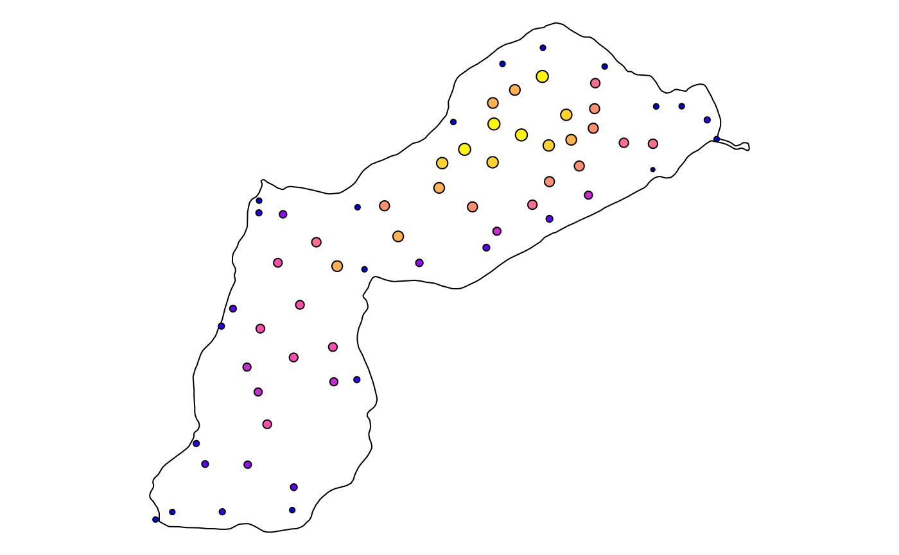

How to use QGIS expressions in qgisprocess?
Floris Vanderhaeghe & Jannes Muenchow
Last updated: 2023-04-24
Source:vignettes/qgis_expressions.Rmd
qgis_expressions.RmdIntroduction
Many QGIS processing algorithms provide the possibility to use QGIS
expressions. If an algorithm argument expects a QGIS expression,
this is typically marked by a button in the QGIS processing dialog that
opens the QGIS expression builder (e.g. in
native:extractbyexpression), or by a directly integrated
QGIS expression builder (e.g. in native:fieldcalculator).
Such arguments are of type expression, as seen in the
output of qgis_get_argument_specs().
qgis_get_argument_specs("native:fieldcalculator") |> subset(name == "FORMULA")
#> # A tibble: 1 × 6
#> name description qgis_type default_value available_values acceptable_values
#> <chr> <chr> <chr> <list> <list> <list>
#> 1 FORMULA Formula expressi… <NULL> <NULL> <chr [1]>Secondly, one can use expressions for data-defined
overriding. This means that an algorithm argument that is usually a
fixed (numeric or boolean) value can also take on the value of
another field or the result of an expression. In the QGIS processing
dialog, such arguments have a ‘data-defined
override’ button. An example is provided by the
DISTANCE argument of native:buffer, for which
we query the acceptable values below.
qgis_get_argument_specs("native:buffer") |>
subset(name == "DISTANCE") |>
dplyr::select(acceptable_values) |>
tidyr::unnest(cols = acceptable_values) |>
knitr::kable()| acceptable_values |
|---|
| A numeric value |
| field:FIELD_NAME to use a data defined value taken from the FIELD_NAME field |
| expression:SOME EXPRESSION to use a data defined value calculated using a custom QGIS expression |
Examples where the argument expects a QGIS expression
As example data, we use a lake polygon and a set of points that have lake depth as attribute.
longlake_path <- system.file("longlake/longlake.gpkg", package = "qgisprocess")
longlake_depth_path <- system.file("longlake/longlake_depth.gpkg", package = "qgisprocess")In a first example, we use a QGIS expression to filter points by depth. We can simply pass the expression as a string:
qgis_run_algorithm(
"native:extractbyexpression",
INPUT = longlake_depth_path,
EXPRESSION = '"DEPTH_M" > 1',
.quiet = TRUE
) |>
st_as_sf()
#> Using `OUTPUT = qgis_tmp_vector()`
#> Using `FAIL_OUTPUT = qgis_tmp_vector()`
#> Simple feature collection with 39 features and 2 fields
#> Geometry type: POINT
#> Dimension: XY
#> Bounding box: xmin: 410242.8 ymin: 5083519 xmax: 411466.8 ymax: 5084691
#> Projected CRS: NAD83 / UTM zone 20N
#> # A tibble: 39 × 3
#> WAYPOINT_I DEPTH_M geom
#> <dbl> <dbl> <POINT [m]>
#> 1 8 1.4 (411466.8 5084488)
#> 2 12 1.4 (411379.1 5084490)
#> 3 17 1.4 (411292.9 5084670)
#> 4 19 1.5 (411290.8 5084593)
#> 5 20 1.5 (411286.8 5084534)
#> 6 24 1.2 (411272.2 5084333)
#> 7 25 1.5 (411244.6 5084420)
#> 8 27 1.6 (411220.3 5084500)
#> 9 29 1.7 (411205.4 5084575)
#> 10 36 1.8 (411133.2 5084691)
#> # ℹ 29 more rowsMore often, you will want to use QGIS functions in expressions, and look at the relationship between geometries or create new geometries.
Let’s calculate the distance between the points and the lake border,
and add it as an attribute to the points. For that we will use the
native:fieldcalculator algorithm.
We first create the lake border:
lake_border_path <- qgis_run_algorithm(
"native:polygonstolines",
INPUT = longlake_path,
.quiet = TRUE
) |>
qgis_extract_output("OUTPUT")
#> Using `OUTPUT = qgis_tmp_vector()`Next, build the QGIS expression. Referring to the INPUT
geometry in native:fieldcalculator is done with the
@geometry variable.
expr <- glue::glue("distance(
@geometry,
geometry(
get_feature_by_id(
load_layer('{lake_border_path}', 'ogr'),
1
)
)
)")Referring to the lake border geometry in an expression is a bit
trickier, since it requires several QGIS functions. The layer can be
loaded from a filepath with the load_layer() function, then
the first (and only) feature is selected with
get_feature_by_id(), and the geometry of that feature is
selected using the geometry() function. These steps are
needed because the distance() function needs geometries to
work on, not features, layers or filepaths.
Use the QGIS expression builder to look up function documentation, or consult the online QGIS function documentation.
Note: the load_layer() function is only available since
QGIS 3.30.0! In earlier versions, you needed to refer to the layer’s
name in an existing QGIS project, and refer to the project path
in qgis_run_algorithm() with the special
PROJECT_PATH argument. The load_layer()
approach since QGIS 3.30.0 avoids the need for a QGIS project.
Now we can run the algorithm:
qgis_run_algorithm(
"native:fieldcalculator",
INPUT = longlake_depth_path,
FIELD_NAME = "distance",
FORMULA = expr
) |>
st_as_sf()
#> Using `FIELD_TYPE = "Decimal (double)"`
#> Argument `FIELD_LENGTH` is unspecified (using QGIS default value).
#> Argument `FIELD_PRECISION` is unspecified (using QGIS default value).
#> Using `OUTPUT = qgis_tmp_vector()`
#> Simple feature collection with 64 features and 3 fields
#> Geometry type: POINT
#> Dimension: XY
#> Bounding box: xmin: 409967.1 ymin: 5083354 xmax: 411658.7 ymax: 5084777
#> Projected CRS: NAD83 / UTM zone 20N
#> # A tibble: 64 × 4
#> WAYPOINT_I DEPTH_M distance geom
#> <dbl> <dbl> <dbl> <POINT [m]>
#> 1 2 0.8 6.22 (411658.7 5084501)
#> 2 3 0.9 38.6 (411630.3 5084560)
#> 3 5 0.8 46.7 (411553.4 5084601)
#> 4 6 0.8 49.3 (411476.4 5084600)
#> 5 8 1.4 100. (411466.8 5084488)
#> 6 10 0.6 25.4 (411466.4 5084410)
#> 7 12 1.4 140. (411379.1 5084490)
#> 8 16 0.8 39.4 (411321.2 5084721)
#> 9 17 1.4 93.7 (411292.9 5084670)
#> 10 19 1.5 150. (411290.8 5084593)
#> # ℹ 54 more rowsExample applying a data-defined override
Suppose that we want to create a buffer around the points with a
dynamic radius expressed as a function of DEPTH_M, e.g. 10
times the depth at each point. We will use native:buffer
for that purpose. Note: applying a data-defined override with
qgisprocess is only possible since QGIS 3.30.0!
Because DISTANCE by default expects a numeric value, you
have to use the prefix expression: if you want to pass an
expression string. Double quotes are used in QGIS expressions to denote
fields (attributes), but you can also omit them.
Let’s try:
buffer <- qgis_run_algorithm(
"native:buffer",
INPUT = longlake_depth_path,
DISTANCE = 'expression: "DEPTH_M" * 10',
.quiet = TRUE
) |>
st_as_sf()
#> Argument `SEGMENTS` is unspecified (using QGIS default value).
#> Using `END_CAP_STYLE = "Round"`
#> Using `JOIN_STYLE = "Round"`
#> Argument `MITER_LIMIT` is unspecified (using QGIS default value).
#> Argument `DISSOLVE` is unspecified (using QGIS default value).
#> Using `OUTPUT = qgis_tmp_vector()`So from the 64 points we have created 64 polygons:
st_geometry_type(buffer) |> as.character() |> table()
#>
#> MULTIPOLYGON
#> 64Plot the result:
par(mar = rep(0.1, 4))
plot(read_sf(lake_border_path) |> st_geometry())
plot(buffer[, "DEPTH_M"], add = TRUE)
If you just want to refer to the value of another attribute, then you
can also use the field: prefix instead, without
double quotes around the attribute name and without spaces:
qgis_run_algorithm(
"native:buffer",
INPUT = longlake_depth_path,
DISTANCE = "field:DEPTH_M"
) |>
st_as_sf()